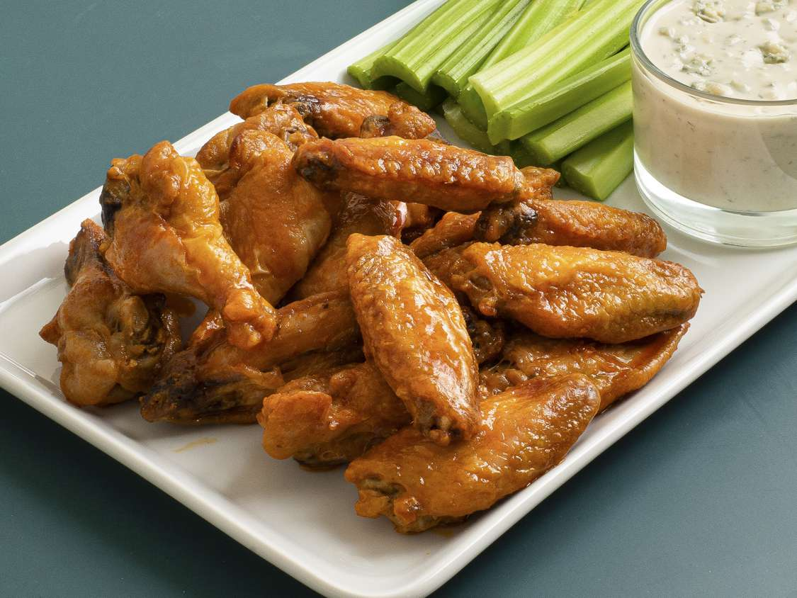

Elliot's Chicken Wings Recipe

Recipe Summary
Take your chicken wings to the next level using this chicken wings recipe.
The secret: adding cornstarch will make your wings extra crispy. So good!
Ingredients
- 1 lb chicken wings
- 1 tsp cornstarch
- 1 cup Frank's Hot Sauce
Steps
- Dry the chicken wings and add the cornstarch to the chicken wings.
- Set air fryer temparature to 400 degrees and place chicken wings inside.
- Fry the chicken wings for 30 minutes.
- Retreive the chicken wings and toss in sauce.
- Serve with ranch or blue cheese.